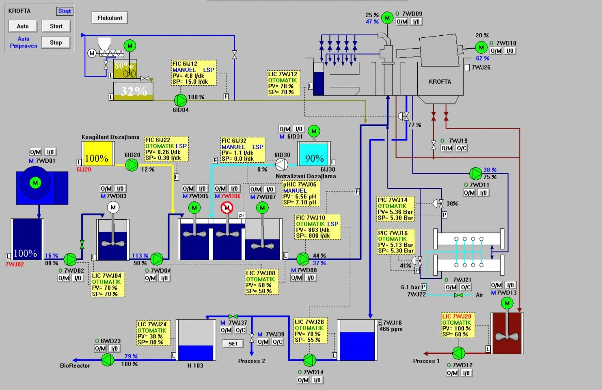

Endüstriyel SCADA ve Arıtma Tesisi Otomasyonu
Fabrika, üretim hattı ve arıtma tesislerinde SCADA tabanlı proses izleme ve kontrol; sahadaki PLC, sensör ve ekipman verilerini merkezi bir ekranda toplayarak operatörün gerçek zamanlı karar almasını sağlar. Bu yazıda VoltGuard'ın biyolojik ve kimyasal arıtma tesislerinde uyguladığı SCADA çözümlerini gerçek proses ekranları üzerinden inceliyoruz.
Öne Çıkanlar
- SCADA; PLC, sensör ve saha ekipmanlarından toplanan verileri merkezi bir ekranda görselleştirir, uzaktan izleme ve kontrol sağlar.
- Biyolojik arıtma tesislerinde oksijen, pH ve bulanıklık sensörleri PID tabanlı dozajlama algoritmalarıyla entegre çalışır.
- Ekipman bazlı popup ekranlar; anlık akım, çalışma durumu, servis bilgisi ve alarm kayıtlarına hızlı erişim sunar.
- Kimyasal arıtma proseslerinde koagülant/flokülant dozajı ile pH/ORP değerleri otomatik olarak ayarlanır.
- Siemens, Allen Bradley, Schneider Electric, Mitsubishi ve Delta PLC platformlarında yazılım geliştiriyoruz.
SCADA ve PLC Entegrasyonu Nedir?
SCADA (Supervisory Control and Data Acquisition), sahadaki PLC'lerden, sensörlerden ve saha ekipmanlarından toplanan verileri merkezi bir operatör ekranında birleştiren bir izleme ve kontrol sistemidir. VoltGuard olarak Siemens (S7-1200 / S7-1500 / S7-300), Allen Bradley, Schneider Electric, Mitsubishi ve Delta gibi platformlarda sıfırdan PLC programlama, mevcut yazılım revizyonu, proses kontrol yazılımları ve endüstriyel haberleşme entegrasyonları (Modbus, Profinet, Profibus, Ethernet/IP) geliştiriyoruz.
HMI ve SCADA katmanında operatör panel tasarımı, alarm ve raporlama sistemleri, uzaktan izleme ve kontrol çözümleri ile PLC-VFD, PLC-robot, PLC-enerji analizörü entegrasyonlarını; MES-ERP sistemleriyle veri entegrasyonunu ve IoT tabanlı izleme altyapılarını tek çatı altında sunuyoruz.
Biyolojik Arıtma Tesisi – Proses Akış ve Kontrol Ekranı

Biyolojik ve kimyasal arıtma tesislerinde dozajlama, karıştırma, havalandırma ve atık su yönetimi süreçleri için özel otomasyon çözümleri geliştiriyoruz. SCADA tabanlı proses akış ekranı; havalandırma blowerleri, geri devir pompaları ve kritik ekipmanların merkezi olarak izlenmesini ve kontrol edilmesini sağlar. Sistem, oksijen, pH ve bulanıklık sensörlerinden alınan verileri PID tabanlı dozajlama algoritmalarıyla işleyerek prosesin optimum koşullarda çalışmasını sağlar. Bu sayede çıkış suyu kalitesi kararlı hale getirilirken enerji tüketimi de minimize edilir.
- Enerji tüketiminde optimize edilmiş ve ölçülebilir tasarruf sağlar.
- Proses hatalarını ve operatör müdahalesini minimize eder.
- Gerçek zamanlı izleme ile hızlı müdahale imkanı sunar.
- Çıkış suyu kalitesinde süreklilik ve standartlara uyum sağlar.
Ekipman Bazlı Detay ve Trend Analizi

Operatörler, ilgili ekipmana tıklayarak anlık akım, çalışma durumu, servis bilgileri ve alarm kayıtlarına hızlıca erişebilir. Dinamik faceplate yapısı ve kullanıcı yetki yönetimi sayesinde sistem hem güvenli hem de kullanıcı dostu bir deneyim sunar. Bu yapı, operatörlerin sistemi kısa sürede öğrenmesini sağlarken arıza ve alarmlara hızlı müdahale edilmesine olanak tanır; bakım ve servis süreçleri daha planlı ve verimli hale gelir.
Kimyasal Arıtma ve Flotasyon Sistemi Otomasyonu

Kimyasal arıtma prosesinde koagülant ve flokülant dozajları ile pH ve ORP değerleri, proses ihtiyaçlarına göre otomatik olarak ayarlanarak optimum arıtma koşulları sağlanır. Karıştırıcılar ve dozaj pompaları entegre şekilde çalışarak kimyasal reaksiyonların verimli gerçekleşmesini destekler. Bu yapı sayesinde hem kimyasal tüketimi optimize edilir hem de çıkış suyu kalitesi sürekli kontrol altında tutulur.
Revizyon, Modernizasyon ve Devreye Alma
Eski otomasyon sistemlerinin yeni PLC platformlarına migrasyonu, enerji verimliliği optimizasyonu, üretim hattı kapasite artırımı ve arıza analizi/performans iyileştirme hizmetleri sunuyoruz. Saha devreye alma, online/uzaktan teknik destek, periyodik bakım, arıza müdahale ve operatör/teknik ekip eğitimleriyle projeyi teslimden sonra da destekliyoruz.
Sık Sorulan Sorular
SCADA sistemi ne işe yarar?
SCADA (Supervisory Control and Data Acquisition), sahadaki PLC, sensör ve ekipmanlardan toplanan verileri merkezi bir ekranda görselleştirerek proses izleme, uzaktan kontrol, alarm yönetimi ve raporlama imkanı sağlar.
Arıtma tesislerinde otomasyonun faydası nedir?
Biyolojik ve kimyasal arıtma proseslerinde otomasyon; oksijen, pH ve bulanıklık gibi parametrelerin PID tabanlı dozajlama algoritmalarıyla kontrol edilmesini sağlayarak çıkış suyu kalitesini kararlı hale getirir ve enerji/kimyasal tüketimini optimize eder.
Hangi PLC ve SCADA platformlarıyla çalışıyorsunuz?
Siemens (S7-1200/S7-1500/S7-300), Allen Bradley, Schneider Electric, Mitsubishi, Delta gibi PLC platformları ile WinCC, Wonderware/AVEVA, Ignition gibi SCADA yazılımlarında proje geliştiriyoruz.
Mevcut eski otomasyon sistemleri yenilenebilir mi?
Evet. Eski PLC/SCADA sistemlerinin güncel platformlara migrasyonu, enerji verimliliği optimizasyonu ve kapasite artırımı kapsamında revizyon ve modernizasyon hizmeti sunuyoruz.
Bu içerik genel bilgilendirme amaçlıdır. Proje bazlı SCADA/PLC mimarisi, ekipman seçimi ve entegrasyon kapsamı; tesisin proses koşulları ve mevcut altyapısına göre mühendislik değerlendirmesiyle netleşir.